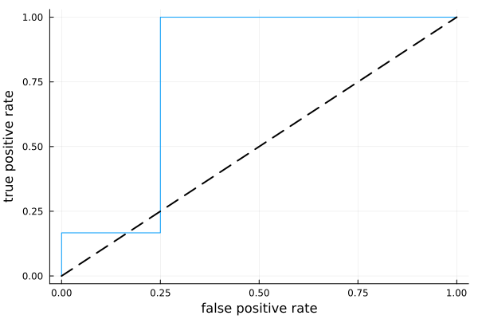

Receiver Operator Characteristics
Example
using StatisticalMeasures
using CategoricalArrays
using CategoricalDistributions
# ground truth:
y = categorical(["X", "O", "X", "X", "O", "X", "X", "O", "O", "X"], ordered=true)
# probabilistic predictions:
X_probs = [0.3, 0.2, 0.4, 0.9, 0.1, 0.4, 0.5, 0.2, 0.8, 0.7]
ŷ = UnivariateFinite(["O", "X"], X_probs, augment=true, pool=y)
ŷ[1]UnivariateFinite{OrderedFactor{2}}(O=>0.7, X=>0.3)using Plots
curve = roc_curve(ŷ, y)
plt = plot(curve, legend=false)
plot!(plt, xlab="false positive rate", ylab="true positive rate")
plot!([0, 1], [0, 1], linewidth=2, linestyle=:dash, color=:black)
auc(ŷ, y) # maximum possible is 1.00.7916666666666666Reference
StatisticalMeasures.roc_curve — Functionroc_curve(ŷ, y) -> false_positive_rates, true_positive_rates, thresholdsReturn data for plotting the receiver operator characteristic (ROC curve) for a binary classification problem.
Here ŷ is a vector of UnivariateFinite distributions (from CategoricalDistributions.jl) over the two values taken by the ground truth observations y, a CategoricalVector.
If there are k unique probabilities, then there are correspondingly k thresholds and k+1 "bins" over which the false positive and true positive rates are constant.:
[0.0 - thresholds[1]][thresholds[1] - thresholds[2]]- ...
[thresholds[k] - 1]
Consequently, true_positive_rates and false_positive_rates have length k+1 if thresholds has length k.
To plot the curve using your favorite plotting backend, do something like plot(false_positive_rates, true_positive_rates).
Core algorithm: Functions.roc_curve
See also AreaUnderCurve.